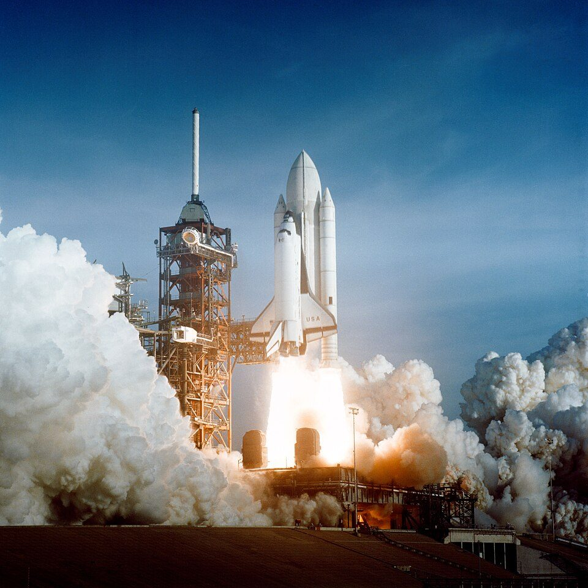

Living in space
The International Space Station has been continuously inhabited for over 25 years. How people eat, sleep and work 400 km up.


Since 2 November 2000 there have always been people living in space. Their home is the International Space Station (ISS), the largest object humanity has ever put in orbit.
A building flying at 28,000 km/h
The station is 109 metres long, like a football pitch, and weighs about 420 tonnes. It was assembled piece by piece between 1998 and 2011 with more than 40 assembly flights. The United States, Russia, Europe, Japan and Canada take part. It circles the Earth every 90 minutes, so its crew see 16 sunrises a day. From the ground it is visible to the naked eye as a very bright dot crossing the sky in a few minutes.
A day in orbit
- Sleeping: in sleeping bags tied to the wall, inside cabins the size of a phone booth. Up and down do not exist.
- Eating: packaged or dehydrated food; crumbs and droplets float and can damage equipment, so bread and loose salt are avoided (salt is used dissolved in water).
- Water: almost all of it is recycled, including sweat and urine. "Yesterday's coffee is today's coffee", the astronauts joke.
- Exercise: about two hours a day on a treadmill, bike and a vacuum-powered weight machine. Without it, bones and muscles weaken quickly.
- Work: hundreds of experiments in medicine, biology, materials and physics that can only be done without gravity.
What space does to the body
In microgravity fluids rise to the head (the face puffs up and the legs get thinner), the spine stretches and you can grow up to 5 cm, bones lose 1% of their mass per month and eyesight can deteriorate. Astronaut Scott Kelly spent almost a year on the station while his identical twin, Mark, stayed on Earth: the study of both revealed changes in his genes and immune system, most of them reversible.
Before and after the ISS
The USSR launched the first station, Salyut 1, in 1971, followed by Mir (1986–2001), where Russia's Valeri Polyakov spent 437 days in a row, the current record. The United States had Skylab (1973–1979).
The Space Shuttle (1981–2011) was a reusable craft that launched like a rocket and landed like a plane. It flew 135 missions, launched Hubble and carried much of the station, but two accidents, Challenger (1986) and Columbia (2003), claimed the lives of 14 astronauts.


Today the station is reached on Russian Soyuz and SpaceX Crew Dragon spacecraft. China has its own station, Tiangong, inhabited since 2021. The ISS will be retired around 2030 and replaced by commercial stations.
Spanish astronauts
Pedro Duque was the first Spaniard in space: he flew on the shuttle Discovery in 1998 and spent ten days on the ISS in 2003. He later became Spain's science minister. In 2022 ESA selected Pablo Álvarez, an engineer from León, as a career astronaut, and Sara García, a cancer researcher, as a reserve astronaut.
Videos to understand it better
- How did they build the ISS? (International Space Station)Jared Owen · 8.6M views
Videos are from YouTube and belong to their creators. They only load when you click them. See all videos →